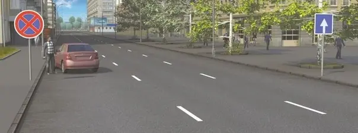

Мои курсы / Остановка и стоянка / Урок 3
Вынужденная остановка
Урок 3 из 14
Билет 1 · Вопрос 1
Фишка, чтобы запомнить
Хочу, но не могу ехать — вынужденная. Могу, но жду — обычная.
Простыми словамиОстановился не потому, что захотел, а потому, что дальше ехать нельзя: сломалась машина, плохо водителю или на дороге препятствие.
Пункт 1.2 ПДДВынужденная остановка — прекращение движения из-за технической неисправности, опасности от перевозимого груза, состояния водителя или пассажира или препятствия на дороге.
Вопросы из билетов
Где это спросят на экзамене
Проверь себя · билет 15, вопрос 7

Обязан ли в этой ситуации водитель, остановившийся из-за неисправности, выставить знак аварийной остановки?
Ответь верно, чтобы открыть следующий урокСледующий урок →